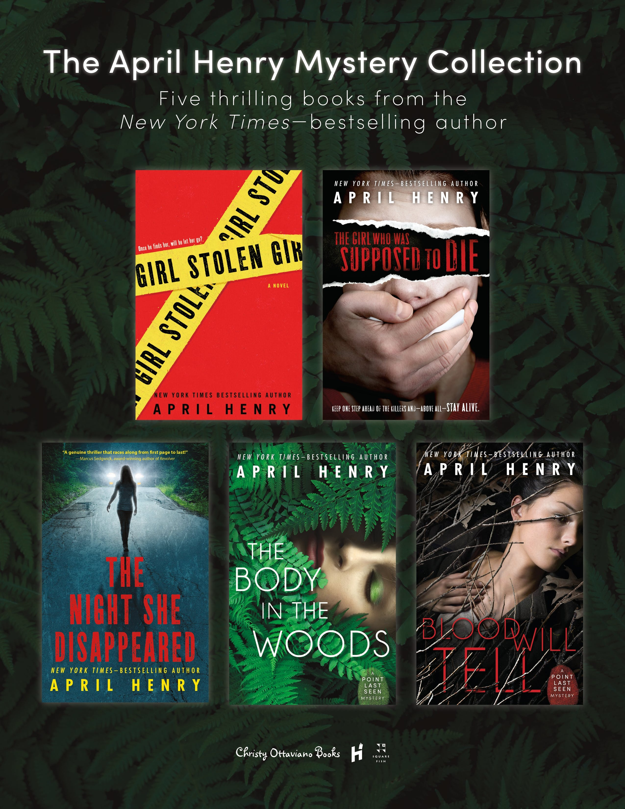

Collections
Jellycats
Collecting Jellycat plushies has become more than a hobby; it's a source of joy and comfort. Each plushie, whether from the "Amusable" or "Bashful" collection, is a charming character that brings a smile to my face. The vibrant colors, meticulous craftsmanship, and undeniable cuteness of these plushies make them not just toys but cherished companions in my collection, each with its own unique charm and personality.
Littlest Pet Shops
Rediscovering older-generation Littlest Pet Shops has been a nostalgic journey, bringing healing to my inner child. These tiny, whimsical creatures were a significant part of my childhood, and collecting them now feels like reuniting with old friends. Each miniature pet holds cherished memories of imaginative adventures, providing a comforting escape to the carefree days of youth. Beyond a mere collection, these Littlest Pet Shops serve as a tangible link to the simplicity and joy of childhood, offering a therapeutic and delightful connection to my past.
Books
Collecting books is a passion that spans genres for me. I'm particularly drawn to mystery and thriller novels, and April Henry is my favorite author in this realm. What makes my collection unique is the personal touch—after a conversation with April, she sent signed labels for my books, a thoughtful alternative to traditional signatures. My shelves also host a mix of romance novels and intriguing biographies, offering a well-rounded reading experience. Each book tells a story not just within its pages but also of my evolving literary journey and connections with authors. It's more than a collection; it's a dynamic exploration of diverse literary landscapes and meaningful engagements with the written word.

Projects
Cisco Packet Tracer Proficiency
Cisco Packet Tracer is a network simulation tool developed by Cisco Systems that allows users to design, build, and troubleshoot complex network configurations. It serves as a virtual environment where networking concepts can be explored and implemented without the need for physical hardware. Packet Tracer supports the simulation of various networking devices, including routers, switches, and end devices, enabling users to create and test different network topologies. It offers a user-friendly interface with drag-and-drop functionality, making it accessible for both beginners and experienced network professionals.
So far, this semester I have gotten 100% on nearly every single Cisco Packet Tracer Lab that we have needed to complete for our Intro to Networking and Security program. This is an important accomplishment to me, as these routers and switches will be what we are working on, hands on, in the real world.

Windows Administration
In our Windows Administration program, we have learned how to become fluent in navigating the Windows OS. Throughout our semester in the course, we have learned many different topics, including but not limited to: Installing Windows, and the different installation types, System Utilities, Managing Disks and File Systems, Command Line Interface and Windows Security Features, Folder Shares, Print servers, and event logs, and also the windows registry!
Windows Security Features took center stage as we delved into robust mechanisms for safeguarding systems against potential threats. We gained practical insights into implementing security best practices and learned to navigate the dynamic landscape of cybersecurity within the Windows environment.
The comprehensive curriculum also encompassed the configuration of Folder Shares, where we learned to facilitate seamless collaboration by setting up shared resources. Print servers and event logs became integral components of our skill set, allowing us to manage and monitor networked printers and delve into the wealth of information provided by system event logs.

Database Administration
In the introductory Database Administration course, I delved into the fundamental principles of managing and optimizing databases. The curriculum covered database design, normalization techniques, and the importance of data integrity. I gained insights into relational database management systems (RDBMS), understanding SQL for querying and manipulating data. Practical exercises honed my skills in creating and maintaining databases, ensuring efficient data retrieval and storage. Security measures and user access management were emphasized to safeguard sensitive information. Additionally, the course explored backup and recovery strategies, essential for preventing data loss. Overall, this introductory journey equipped me with a foundational understanding of database administration, empowering me to organize and secure data effectively.
Website Development
In my web development course, I learned more about skills that I have previously tinkered with. My past endeavors, like customizing Steam and Tumblr profiles, provided a loose familiarity, but this course intricately pieced together the puzzle. Now, I not only navigate HTML and CSS with ease but also find growing comfort in the intricate dance of JavaScript. The thrill of personalizing websites has transformed into a mesmerizing experience, witnessing subtle adjustments manifest in real-time. Unraveling the nuances of these languages has proven immensely enjoyable, sparking curiosity about the vast possibilities awaiting exploration as I refine these newfound skills.
I appreciated how the course seamlessly blended theoretical knowledge with practical hands-on exercises, allowing me to apply what I learned in real-world scenarios and reinforcing my understanding of web development principles, which made it much more accessible and rewarding.

Causes
I am very passionate about solving world hunger. My father was born in a labour camp in Weiz, Austria, in 1947. He had 2 older brothers, one of whom he's never met, because he unfortunately passed away from starvation due to the conditions in the labour camp. As a result, this disturbed my father very deeply and he became an advocate for those who have lesser than he does. My father passed away in 2021, and in his legacy I strive to do the same.
![An exerpt from my senior-year yearbook. Reads 'IN MEMORY OF HERB STIENE Herb Stiene was a parent at our school. We cannot say enough good about the things he did for our school. He was an integral part of our SAC having been a co-chair for the past frou years. He was deeply concerned about the welfare of our students and played an important part in helping to start a Free Store at YCMHS. He listened to the concerns of both staff and students and took their thoughts and concerns seriously. Our school benefitted from his tireless efforts over these years. We were all shocked and saddened by his sudden passing this winder. Even in his passing he thought of our school by requesting donations be made to the breakfast program and free store in his name. He will not be forgotten!](yearbook.png)
I was born in Ottawa, Ontario, but I grew up in Yarmouth, Nova Scotia. According to this
article from nsadvocate.org, there is a stark poverty rate of 30% in Yarmouth. Growing up in Yarmouth, my family generally had more money than the families, of my friends, and my parents would give lots of donations as a result. When I went to Highschool at Yarmouth Consolidated Memorial High School, my father quickly became the chair of the Student Advisory Committee. He had taken this role up at my middle school, Maple Grove Education Center, and realized how eye-opening the experience was into seeing what difficulties other kids my age were facing. At both MGEC and YCMHS, my father was one of the founders of their "free stores". These free stores allowed students to have some of their needs met, without needing to financially strain themselves, their parents, or force them into making the decision of whether they will be able to afford a toiletry or their next meal. The free store was a success, and routinely ran out of products. My father went around to local businesses to ask for donations, which include donations from local grocery stores, the dentist, the eye doctor, our familiy doctor, and many more.
A local nonprofit that has been helping put food in the stomachs of Nova Scotians that have less, is Feed Nova Scotia. Feed Nova Scotia does not directly provide food to people in NS. Instead, they provide food and other necessary items to pre-existing food banks in Nova Scotia, as these food banks cannot meet their communities needs on their own.
Many believe that Feed Nova Scotia restricts who receives support from their programs. This is typically misunderstood, as they do not provide to individuals as they do provide to the food banks that are in need.
When making a donation to those that are in need, it is always better to make these donations directly to the charity (Feed Nova Scotia/the individual food banks) as they have the ability to bulk-buy items for a much cheaper rate than our dollars would normally be able to be. Local grocers, such as Superstore and Sobeys, put out "food bags" around the holidays. These are $5-10 dollars in price, and generally include enough ingredients to make a singular meal, if that. These bags allow the company to get tax receipts at the expense of the customers, and they financially benefit from these "donations" more than the individuals in need do.
Feed Nova Scotia
Feed Nova Scotia is a charitable organization dedicated to alleviating hunger and food insecurity in the province of Nova Scotia, Canada. Committed to the mission of providing nutritious meals and support to those in need, Feed Nova Scotia plays a crucial role in the community.
The organization operates as a central hub, working collaboratively with a network of food banks, shelters, and meal programs across the province. Through its efficient distribution system, Feed Nova Scotia ensures that essential food resources reach individuals and families facing hunger, fostering a sense of community and solidarity.
One of the notable aspects of Feed Nova Scotia's approach is its emphasis on providing not just any food but nutritious and wholesome meals. This reflects a commitment to promoting the well-being of those accessing their services, recognizing the importance of quality nutrition in overall health.
Beyond immediate food distribution, Feed Nova Scotia engages in community initiatives, awareness campaigns, and partnerships to address the root causes of hunger. By advocating for social change and collaborating with local businesses and volunteers, the organization works towards creating a more sustainable and supportive environment for those facing food insecurity.
Volunteerism is at the heart of Feed Nova Scotia's success, with individuals, groups, and businesses coming together to contribute time, resources, and expertise. This collective effort underscores the community-driven spirit that defines Feed Nova Scotia and its impact on Nova Scotians facing challenging circumstances.
In essence, Feed Nova Scotia stands as a beacon of hope, addressing hunger with compassion, dignity, and a commitment to fostering a resilient and nourished community. Through its multifaceted approach, the organization not only provides immediate relief but also actively contributes to building a more inclusive and supportive society for all.
Resume
Listed below are some of my academic and professional achievements!
Work Experience
Captured Escape Rooms, Halifax — Assistant Manager
SEPT 2021 - PRESENT
Game Master and Team lead, ensures the customer experience is immersive and safety is achieved, responsible to open and close(keyholder), hosting guests, resetting and troubleshooting escape rooms, and assist in resolving issues, technology related or customer service related.
Yarmouth, NS — Child Care Provider
JUNE 2021 - SEPT 2021
Responsible for the overall well-being of three young children. Includes watching over recreational activities, lifeguarding, transportation, meals, sanitation, and upholding safety standards.
Camp Peniel, Cedar Lake, NS — Leader in Training/Lifeguard
MAY 2019 - OCT 2021
Serving in group atmospheres, in either a programming or operations capacity in order to give direct care to campers, help plan activities, or aid with basic maintenance operations of the camp and junior lifeguard. ( also was the Leader in Training for the program. Assisted in scheduling, planning, and execution of all activities and games at the summer camp to assist the Program Director.
Education
Nova Scotia Community College - Diploma in IT Systems Management&Security
SEPT 2023 - Present
In progress learning. Currently in the process of finishing my first semester.
Saint Mary's University, Halifax, NS — B.A.
SEPT 2021 - APRIL 2022
Completed one year (2 Semesters) of University B.A.-related courses, with intentions to later pursue an education in Computer Science/cyber security (part-time).
Yarmouth Consolidated Memorial High School, Yarmouth, NS — High School Diploma
SEPT 2017 - JUNE 2021
I received my High School Diploma with a high grade average of 98.6%.